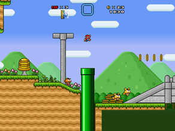

Assain Creed Demake for Atari

Task
The task was to choose a modern game and take its core game mechanics and turn it into an Atati styled Game. I was in a group of 5 to complete this task.
Weekly Report
-
Sprint 1
To start off we created a Trello bored and divided the game up into segments and then created tasks to do this. The segments were player controls, world generation, combat, score system, AI, UI, and sound. The person who got selected to do a certain segment of the game had to come up with sub tasks that needed to be completed before this segment could be ticked off. I was tasked with combat and scoring system. Combat is reliant on player movement and the enemies (AI) so what we decided was to have a player game object with a movement script and a combat script attached to it so it allowed me to create an API or combat so when the base of player movement was done, we can merge our code seamlessly. The main goal was to keep the core mechanics of Assassins Creed in the de-make so when people were playing it, they would instantly know it is an Assassin Creed style game. When it comes to combat it was discussed that the stealth style attacks needed to be included. We used Prince of Persia and Super Mario as a reference to what our game could look and feel like.
We decided that there would be two types of attack. One would be a stealth attack where you can only kill the enemy when running behind it and the killing would be automatic as the Atari only had one button available which we will use for jumping.
The second attack is inspired by Super Mario and its where you can jump onto the enemies’ heads to kill them. The reason this move is important is the signature assassin creed move is jumping in the air and landing on top of an enemy to strike them.
To begin with I created a Combat.cs file and a created an API that can be used when more of the game is implemented
-
Sprint 2
Now we had a basic player movement and enemies I created a test scene for combat. There was no animation with the combat. How it worked for the stealth attack was it had a strike range which was a radius and if an enemy fell inside this strike range it would test to see if the enemy was facing the same X direction as the player. If the enemy was then it would die otherwise there would be no damage delt by the player. Then the jumping onto an enemy head determines if the players Y vector is negative and if the bounding box entered from the top and not from the side. With this working I added a sword animation for the stealth move to make the game feel more alive because it gives player feeedback. Aswell as this I flashed the eneny red for a second to signify they were killed.
-
Sprint 3
With Combat implemented I moved onto the scoring system, The initial idea was to have a base difficulty and as the score increased the difficulty would increase to create a difficulty curve to prevent the player from getting bored. The score increased when you killed an enemy and when you hit a certain number e.g., every 100 points. The game would become more difficult in some way. However, you can lose points by being seen by an enemy which is like the original game where you lose out in some of your reward if you are seen on stealth missions. After this was implemented, we all met up and we had basic game loop which was playable. We discussed on how to make the game feel more like assassins’ creed and one method was to include the hay bales and what I implemented was just this. I added a prefab object that could be placed in the levels and when the player went into this hay bale, they would be invisible to enemies and to keep the game balanced we decided to prevent the player from being able to attack inside the hay bales. To give the player feedback that they were hiding I tinted the sprite dark when they were inside the hay bale collider.